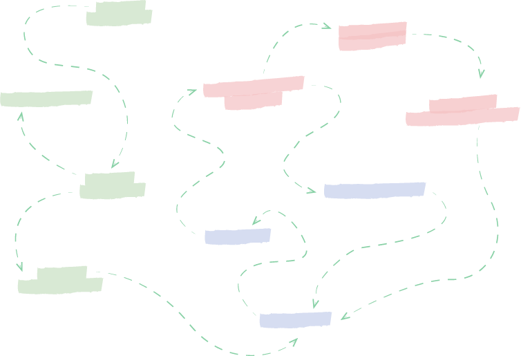
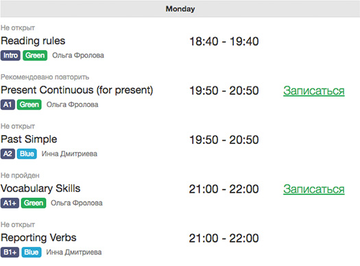
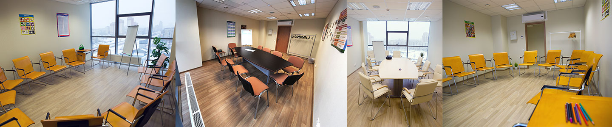

<!DOCTYPE html><html lang="ru"><head><meta charset="UTF-8"><link rel="stylesheet" href="./css/style.css"><script defer src="./js/bundle.js"></script><title>EASY LANG - Эффективное обучение английскому каждый день!</title></head></html><body class="page"><div class="navbar"><div class="navbar__content wrapper"><div class="navbar__brand"><a href="/"></a></div><div class="navbar__phone"><div class="phone"><div class="phone__number">+7 812 389 60 21</div><div class="phone__title">ТРК Международный, 8 этаж</div></div></div></div></div><div class="wrapper wrapper_main"><div class="hero container"><div class="row"><div class="col-md-5 hero__info"><h1 class="heading heading_1 hero__cation">ЭФФЕКТИВНОЕ ОБУЧЕНИЕ АНГЛИЙСКОМУ КАЖДЫЙ ДЕНЬ!</h1><p>Курсы английского по безлимитному месячному абонементу.</p><ul class="list"><li class="list__item">Начало с любой даты</li><li class="list__item">Самостоятельно планируйте расписание занятий</li><li class="list__item">Возможность пройти занятие несколько раз</li><li class="list__item">Изучение и тренировка слов в современной онлайн системе</li><li class="list__item">Разговорный клуб на высоких уровнях</li></ul></div></div><form class="form formHero"><div class="form__header">Запишитесь на один день бесплатного посещения!</div><div class="form__body"><input class="form__input formHero__item" name="lead_name" placeholder="Ваше имя"><input class="form__input formHero__item" name="lead_phone" placeholder="Номер телефона"><button class="button formHero__item">Записатся</button></div></form></div><div class="features container"><div class="row"><div class="col-md-8 offset-md-2"><h2 class="heading heading_2">ОСОБЕННОСТИ НАШЕЙ СИСТЕМЫ ОБУЧЕНИЯ</h2><p>Наша система обучения позволит Вам посещать занятия в удобные для Вас время и дни с интенсивностью, которая Вам подойдет, позволит не пропустить ни одного занятия, а также повторить любой пройденный материал еще раз.</p><br></div><div class="col-md-6 offset-md-3"><h3 class="heading heading_3">Гибкий график</h3><p>Составляйте своё собственное расписание: посещайте школу в удобные дни и время. Начать заниматься можно с любой даты.</p><h3 class="heading heading_3">Интенсивность посещений</h3><p>Занимайтесь в своем темпе, выбирая комфортное для вас количество занятий в неделю.</p><h3 class="heading heading_3">Практика и теория вместе</h3><p>На уроках мы совмещаем теоретический материл и разговорную практику. Все новые темы объясняются на разговорных примерах и с максимальным участием всех студентов.</p><h3 class="heading heading_3">Пробный день в школе!</h3><p>Без предоплаты абонемента, Вы можете посетить пробный урок — занятие, на котором Вы поймете, как же здорово у нас учиться!</p><br><button class="button">Запишитесь на пробный день</button></div></div></div><div class="plan container"><div class="row"><div class="col-md-8 offset-md-2 text_center"><h2 class="heading heading_2">КАК ЭТО РАБОТАЕТ?</h2><p>За 4 года существования школы наша система обучения менялась три раза. Сейчас она выглядит следующим образом:</p></div><div class="col-md-10 offset-md-2"><div class="plan__item" style="top: 0; left: 135px;">ВХОДНОЕ &nbsp;<br>ТЕСТИРОВАНИЕ</div><div class="plan__item" style="top: 133px; left: 15px;">ПРОБНОЕ ЗАНЯТИЕ</div><div class="plan__item" style="top: 248px; left: 126px;">СОЗДАНИЕ &nbsp;<br>КАРТЫ ЗНАНИЙ</div><div class="plan__item" style="top: 386px; left: 35px;">СОЗДАНИЕ &nbsp;<br>ЛИЧНОГО КАБИНЕТА</div><div class="plan__item" style="top: 454px; left: 383px;">ЗАПИСЬ НА УРОК</div><div class="plan__item" style="top: 334px; left: 301px;">ИЗУЧЕНИЕ СЛОВ</div><div class="plan__item" style="top: 115px; left: 307px; font-size: 16px;">ПОСЕЩЕНИЕ УРОКА &nbsp;<br>В ШКОЛЕ</div><div class="plan__item" style="top: 267px; left: 483px;">ДОМАШНЕЕ ЗАДАНИЕ</div><div class="plan__item" style="top: 33px; left: 497px;">МЕЖУРОВНЕВОЕ<br>ТЕСТИРОВАНИЕ</div><div class="plan__item" style="top: 141px; left: 608px;">ПЕРЕХОД НА<br>СЛЕДУЮЩИЙ УРОВЕНЬ</div></div><div class="col-md-8 offset-md-2 text_center"><br><p>Сначала Вы проходите тестирование для определения Вашего уровня знаний. Затем мы создаем Вашу карту знаний и личный онлайн кабинет, в котором Вы будете видеть расписание занятий и записываться на них. Также в онлайн-системе Вы будете делать домашние задания и изучать слова. После прохождения всех уроков уровня, вы сможете пройти тест, который открывает доступ к новому уровню.</p></div></div></div><div class="community container"><div class="row"><div class="col-md-8 offset-md-2 text_center"><h2 class="heading heading_2"><span class="text_green">ЖИЗНЬ &nbsp;</span>В EASY LANG</h2><p>Наш дружный коллектив часто организовывает веселые игры, мероприятия и праздники для студентов школы.</p></div></div><div class="row"><div class="community__photo"></div></div></div><div class="levels container"><div class="row"><div class="col-md-8 offset-md-2 text_center"><h2 class="heading heading_2">УРОВНИ И УРОКИ</h2><p>Очень важно изучать английский по структурированной системе и видеть свой прогресс. Раз в год мы пересматриваем все наши уроки и вносим необходимые корректировки для создания простой и логичной структуры всех модулей. Такой подход гарантирует развитие всей системы и совершенствует путь к достижению поставленных целей наших студентов.</p><br></div></div><div class="row"><div class="col-md-5 offset-md-2"></div><div class="col-md-5"><h3 class="levels__caption heading heading_2">7 уровней</h3><h4 class="levels__description heading heading_4">до Upper-Intermediate</h4><h3 class="levels__caption heading heading_2">76 уроков</h3><h4 class="levels__description heading heading_4">на всех уровнях</h4><h3 class="levels__caption heading heading_2">35 уроков</h3><h4 class="levels__description heading heading_4">в неделю</h4><h3 class="levels__caption heading heading_2">4048 уроков</h3><h4 class="levels__description heading heading_4">проведено</h4></div></div><div class="row"><div class="col-md-6 offset-md-3 text_center"><h2 class="heading heading_2">ПОДОЙДЕТ &nbsp;<span class="text_green">ВСЕМ!</span></h2><p>Одним из основных преимуществ нашей системы является индивидуальный подход к каждому студенту. Мы знаем о их проблемах, целях или страхах и помогаем в решении задач.</p><br></div></div><div class="row"><div class="col-md-8 offset-md-2 text_center"><div class="col-md-4"><h4 class="heading heading_4">Для начинающих</h4><p class="levels__info">Наши занятия прекрасно подойдут для новичков. На уроках мы уделяем время всем аспектам языка: грамматике, говорению, чтению, аудированию и письму.</p></div><div class="col-md-4"><h4 class="heading heading_4">Для продолжающих</h4><p class="levels__info">На средних уровнях мы уделяем внимание функциональности знаний и стараемся перевести их в активные разговорные навыки.</p></div><div class="col-md-4"><h4 class="heading heading_4">Для продвинутых</h4><p class="levels__info">На высоких уровнях акцент делается на обогащение речи, изучение сложных конструкций и слов. Также уделяется внимание скорости речи.</p></div></div></div></div><div class="liveLessons container"><div class="row"><div class="col-md-8 offset-md-2 text_center"><h2 class="heading heading_2"><span class="text_green">ЖИВЫЕ &nbsp;</span>УРОКИ и ON-LINE система</h2><p>Нам важно, чтобы наши студенты могли применять английский язык в реальной жизни, поэтому живое изучение мы дополняем online-платформой.</p><p>Весь процесс помещается в 4 простых шагах</p></div></div><div class="row"><div class="col-md-8 col-xl-6 offset-md-2 offset-xl-3 text_center"><div class="tabs"><div class="tabs__header"><div class="tabs__title tabs__title_active" data-tab-id="1">Запись на урок</div><div class="tabs__title" data-tab-id="2">Изучение слов</div><div class="tabs__title" data-tab-id="3">Посещение урока</div><div class="tabs__title" data-tab-id="4">Тренировка</div></div><div class="tabs__body"><div class="tabs__content" data-tab-id="1"><p>Вы всегда можете посмотреть расписание занятий в личном кабинете и записаться на урок. Расписание, в котором указаны темы, уровень, преподаватель и время занятий составляется заранее.</p></div><div class="tabs__content" data-tab-id="2"><p>Перед посещением урока Вы можете изучить слова, которые будут активно использоваться на нем. Это поможет Вам увереннее чувствовать себя на занятии, а также концентрироваться на основной теме.</p></div><div class="tabs__content" data-tab-id="3"><p>На уроках мы проходим грамматику, изучаем новые слова, слушаем записи, устраиваем ролевые диалоги и играем в игры. Большая часть занятия проходит в разговорной форме, чтобы даже самые застенчивые студенты смогли разговориться.</p></div><div class="tabs__content" data-tab-id="4"><p>Закрепляйте пройденный материал в наших ежедневных заданиях. Тренируйте правила грамматики с помощью нашего тренажёра. Выполняйте все упражнения, чтобы продвигаться по уровням быстрее.</p></div></div></div></div></div></div><div class="comparison container"><div class="row"><div class="col-md-8 offset-md-2 text_center"><h2 class="heading heading_2">ЧЕМ МЫ &nbsp;<span class="text_green">ЛУЧШЕ</span>?</h2><p>Если Вы хотите эффективно изучать английский язык, то наш абонемент, схема обучения и онлайн-поддержка подходят для этой цели лучше всего.</p></div></div><div class="row"><div class="col-md-8 offset-md-2"><table class="table text_center"><thead><tr valign="middle"><th width="300"></th><th valign="middle" nowrap="nowrap">EASY LANG</th><th>Остальные школы</th></tr></thead><tbody><tr><td class="text_right">Гибкий график занятий</td><td class="text_green"><i class="fa fa-check" data-toggle="tooltip" data-placement="left" title="Tooltip on left" aria-hidden="true"></i></td><td><i class="fa fa-meh-o" aria-hidden="true"></i></td></tr><tr><td class="text_right">Начало с любой даты</td><td class="text_green"><i class="fa fa-check" aria-hidden="true"></i></td><td><i class="fa fa-meh-o" aria-hidden="true"></i></td></tr><tr><td class="text_right">Возможность повтора уроков</td><td class="text_green"><i class="fa fa-check" aria-hidden="true"></i><i class="fa fa-check" aria-hidden="true"></i></td><td><i class="fa fa-meh-o" aria-hidden="true"></i></td></tr><tr><td class="text_right">Онлайн-поддержка</td><td class="text_green"><i class="fa fa-check" aria-hidden="true"></i><i class="fa fa-check" aria-hidden="true"></i></td><td><i class="fa fa-check" aria-hidden="true"></i></td></tr><tr><td class="text_right">Заморозка обучения</td><td class="text_green"><i class="fa fa-check" aria-hidden="true"></i><i class="fa fa-check" aria-hidden="true"></i></td><td><i class="fa fa-meh-o" aria-hidden="true"></i></td></tr><tr><td class="text_right">Стоимость месяца</td><td class="text_green"><b>~ 4800 руб.</b></td><td>3 000 - 8 000 руб.</td></tr></tbody></table></div></div></div><div class="cost container"><div class="row"><div class="col-md-8 offset-md-2 text_center"><h2 class="heading heading_2">Стоимость</h2><p>У нас созданы условия оплаты, которые подойдут каждому.</p><br></div></div><div class="row"><div class="col-md-8 offset-md-2"><div class="cost__wrap"><table class="table cost__table"><thead><tr><th></th><th>Утро</th><th>Вечер</th><th>Полный</th></tr></thead><tbody><tr class="cost__separator"><td></td><td colspan="3">время занятий</td></tr><tr><td>Будни</td><td>с 10 до 13</td><td>с 18 до 22</td><td>все</td></tr><tr><td>Выходныe</td><td>все</td><td>все</td><td>все</td></tr><tr class="cost__separator"><td></td><td colspan="3"></td></tr><tr><td>Открытая дата</td><td>+</td><td>+</td><td>+</td></tr><tr><td>Online практика</td><td>+</td><td>+</td><td>+</td></tr><tr><td>Заморозка</td><td colspan="3">7 дней на каждый месяц</td></tr><tr class="cost__separator"><td></td><td colspan="4">стоимость</td></tr><tr class="cost__month"><td>3 месяца</td><td>13 100 Р</td><td>14 800 Р</td><td>17 900 Р</td></tr><tr class="cost__month"><td>6 месяцев</td><td>24 600 Р</td><td>26 600 Р</td><td>28 800 Р</td></tr><tr class="cost__month"><td>9 месяцев</td><td>36 000 Р</td><td>38 100 Р</td><td>39 600 Р</td></tr></tbody></table></div></div></div></div><div class="comfort container"><div class="row"><div class="col-md-8 offset-md-2 text_center"><h2 class="heading heading_2">УЮТ &nbsp;<span class="text_green">И &nbsp;</span>КОМФОРТ</h2><p>Один из основных факторов при выборе места обучения - это комфорт. Мы уделяем этому много времени и стараемся создать уютную атмосферу в наших классах. Светлые кабинеты с панорамными окнами, что может быть лучше?</p><br></div></div></div><div class="comfort container"><div class="row"><div class="col-md-8 offset-md-2 text_center"><h2 class="heading heading_2">ПОПУЛЯРНЫЕ ВОПРОСЫ</h2><p>Мы собрали самые популярные вопросы и дали как можно подробнее ответы</p><br></div></div><div class="row"><div class="col-md-8 offset-md-2 text_center"><div class="accordion"><div class="accordion__title heading heading_4">На сколько быстро проходит курс обучения?</div><div class="accordion__content">Конечно же все зависит от вашей посещаемости и мотивации. В среднем наши студенты завершают одну ступень за 5 - 8 недель.</div><div class="accordion__title heading heading_4">Как часто повторяются занятия?</div><div class="accordion__content">Темы уроков повторяются раз в две недели.</div><div class="accordion__title heading heading_4"> Где узнать расписание?</div><div class="accordion__content">Всё доступное вам расписание можно посмотреть в личном кабинете. Вы будете видеть только те уроки, которые соответствуют Вашему уровню.</div><div class="accordion__title heading heading_4"> Сколько занятий я смогу посетить?</div><div class="accordion__content">Мы никак не ограничиваем вас в посещениях. Занятия идут каждый день, включая субботу и восресение. В среднем наши студенты посещают 16 занятий в месяц. Все зависит от вашего свободного времени и темп, который подходит именно вам.</div><div class="accordion__title heading heading_4"> Сколько длятся занятия?</div><div class="accordion__content">Каждый урок длится 60 минут без перерывов. Этого времени достаточно чтобы расрыть и отработать материал урока. При желании вы можете сходить на 2, а то и 3 урока подряд.</div><div class="accordion__title heading heading_4"> Нужно ли покупать учебники?</div><div class="accordion__content">Каждый урок уникален, так как преподавать самостоятельно подготавливает материалы перед каждым занятием. Все материалы входят в стоимость абонемента. С собой студенты обычно носят ручку и тетрадь для записей.</div><div class="accordion__title heading heading_4"> Сколько человек в группе?</div><div class="accordion__content">Все зависит от темы урока и времени. Иногда, вы можете быть тет-а-тет, а иногда может быть и 8 человек. Мы ограничиваем запись до 10 человек на урок.</div></div></div></div></div><div class="sendContact container"><div class="row"><div class="col-md-8 offset-md-2 text_center"><h2 class="heading heading_2">Запишитесь на &nbsp;<span class="text_green">бесплатное &nbsp;</span>посещение любых занятий в течении одного дня</h2><p>Вы сможете побывать на нескольких уроках, познакомиться с преподавателями, методикой, пообщаться с учениками и пройти тестирование. От вас требуется только предварительная запись и доехать до станции метро Международная.</p></div></div><div class="row"><div class="col-md-8 offset-md-2 text_center"><div class="form"><div class="form__group"><label class="form__label">Ваше имя</label><input class="form__input form__input_block" placeholder="Ваше имя"></div><div class="form__group"><label class="form__label">Номер телефона</label><input class="form__input form__input_block" placeholder="Номер телефона"></div><div class="form__group"><button class="button">Записаться</button></div><P class="footnote">* Ваши контактные данные будут использованы только для связи с вами</P></div></div></div></div></div><div class="footer container"><div class="row"><div class="col-md-4">ЧОУ ДО "Простые языки"<br>Сантк-Петербург ул. Белы Куна д.3<br>ТРК Международный 8 этаж 827 офис<br>Лицензия на образовательную деятельность<br>Серия 78Л01 №0000738<br>ИНН 7816290561 КПП 781601001<br>ОГРН 1137800000502 ОКПО 20514244<br></div><div class="col-md-4"><b>Наш телефон:</b><div class="footer__phone">+7 (812) 389 60 21</div><b>Мы консультируем:</b><p>по будням: с 12:00 до 20:00</p><p>выходным: с 12:00 до 16:00</p></div><div class="col-md-4"><b>Мы принимаем:</b><b>Мы учим: по будням:</b><p>с 10:00 до 22:00</p><p>по выходным: с 11:00 до 18:00</p></div></div></div></body>